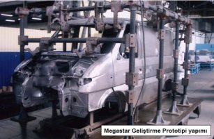
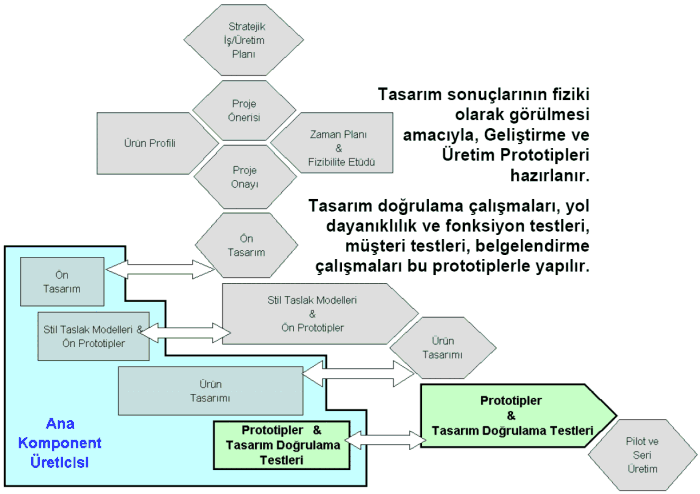
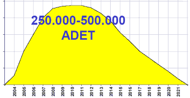

Ürün
tasarýmý ile birlikte prototip tasarým doðrulama testleri
baþlar. Prototipler, gördüðünüz gibi, kendisine özgü prototip
"jiks"ler üzerinde yapýlýr. Bunlar, seri imalat
aparatlarý ve ekipmanlarý deðildir. Ayrýca, teorik doðrulamanýn
desteklenmesi ve kesinleþtirilmesi amacýyla yol testleri
yapýlýr. Bu üründe aþaðý yukarý yüze yakýn geliþtirme prototipi
ve milyonun üzerinde kilometre yapýldýðýný söyleyebilirim.
Çok önemli bir olgu da, neticede bu ürünler müþteriye gidecektir.
Biz, müþteriler arasýnda aklýna, fikrine, bilgisine, tecrübesine
güvendiklerimizi davet edip, biraz da gizlilik ölçüsünde
müþteri doðrulama testleri de yaptýrýyoruz ürünlerimizde.

Ürün
belgelendirme, hakikaten sektörümüzün bir sorunu. Bunun
için yurt dýþýna gitmek mecburiyetinde kalýyoruz. Yurt içinde
yetkili servislerin akredite olmasý ve bizim yurt dýþýna
giderek hem zaman hem para kaybýna uðramamýzýn önlenmesi
devletten beklentilerimiz arasýndadýr. (Türkiye'den alýnan
"tip onay belgeleri"nin birçok ülkede geçerliliðinin
olmayýþý, bu onaylar için Avrupa onay kuruluþlarýný kullanma
mecburiyetini doðurmaktadýr. Ulusal teknik servis kuruluþlarýnýn
akreditasyonu bir an önce saðlanmalýdýr.)
Pilot
ve seri üretim fazýna geldiðimiz zaman, artýk ürünle ilgili
her türlü üretim hattý tüm ana ve yan postalarýyla birlikte
hazýrlanmýþ, faal hale getirilmiþtir. Bu arada þunu da söylemek
istiyorum, biz sadece ürünümüzü deðil ayný zamanda prosesimizi
de özgün bir biçimde tasarlýyor ve geliþtiriyoruz, bu noktada
yetiþmiþ çok önemli insan gücümüz var.
Kýrkýncý
yýlýný idrak ettiðimiz þirketimizde 80'li yýllarda çok temel
bir karar verildi; biz baðýmsýz mý olacaktýk, yoksa bir
ebeveynle birleþecek miydik? Bu noktada stratejik bir karar
verdik ve baðýmsýzlýða karar verdik. O zaman oldukça fazla
eleþtirildik Ancak kendi özgün tasarýmýmýzý kendi özgün
prosesimizi geliþtirmek üzere kendi insan gücümüze, iç dinamizmimize
inanarak yola devam ettik. Bugün bunun faydalarýný görüyoruz,
çünkü yaparak öðrenmek kadar güzel bir þey yok. Yaparken
öðrenebiliyorsunuz. Karar verme özgürlüðünüz sizi bazý hatalar
yapmaya itebiliyor ama bunun faturasýný tecrübe birikimi
olarak tekrar muhafaza edebiliyorsunuz. Bu açýdan bütün
ürün ve proses kendi bünyemizde, ürün ve metot geliþtirme
mühendisleri tarafýndan geliþtirilmektedir.
Biraz
rakam vermek gerekirse, "Megastar" haddizatýnda
22 üyeli bir ailedir. Bunlar için aþaðý yukarý 40 milyon
dolar yatýrým yapýlmýþtýr. 74'ü mühendis olmak üzere 233
kiþi bu projede sürekli olarak çalýþmýþtýr. Toplam 1325
kalem malzeme 190'a yakýn firmadan temin edilmiþtir.
1200
civarýnda kalýp aparat imal edilmiþtir. Ayrýca Ar-Ge harcamalarý
için, çok teþekkür ediyoruz, TÜBÝTAK-TÝDEB'den de destekler
saðlanmaktadýr, bu çok önemlidir. Katma deðer içerisinde
en kapsamlý olaný R&D'dir. Buna ne kadar destek verilse
azdýr, çünkü bu insan gücünün yetiþmesi demektir. Biz, açýkça
söyleyelim, kendi gücümüze inanýyoruz. Takip eden deðil,
takip edilen olmak istiyoruz ve bu anlamda yaptýðýmýz iþlerle
kendimize güvenimiz sürekli artmaktadýr.
|  |
|
Megastar
ürün hayat eðrisi |
Dünyanýn
50 ülkesine ihracat yapýp teknoloji de
satýyor olduðumuza göre, bunun geliþmemesine bir sebep yoktur
diye düþünüyoruz. Hayat eðrisine baktýðýmýz zaman þemada
gördüðünüz sadece üretim kýsmý. Tabii ki müþterinin elinde
buna paralel olarak devam eden bir kullaným ömrü olacaktýr.
Megastar'dan beklentimiz, 2021 yýlýna kadar devam edecek
ömründe 250.000-500.000 arasýnda araç üretip satmaktýr.
Bu
vesileyle "Megastar"a bahtý açýk olsun diyorum.
Beni dinlediðiniz için hepinize çok teþekkür ediyorum.
Sað olun, var olun. Sorularýnýz varsa lütfen alayým.
Soru:
Ben bir þeyi çok merak ediyorum, "Megastar"ýn
parçalarýnýn yüzde kaçý yerli?
Muharrem
Erkan:
Þimdi þöyle söyleyeyim, belki biraz onu açmak lazým. Biz
milli bir þirketiz ama içine kapalý, yurt içinde kalan bir
þirket deðiliz. Vizyonumuza baktýðýnýz zaman, hedefimiz
dünya markasý olarak varlýðýmýzý sürdürmek. Dolayýsýyla,
150' den fazla yurt dýþý fýrmayla birlikte çalýþýyoruz.
Enternasyonal bir firma olma vasfýmýz var.
Yerli
kýsmýna baktýðýmýz zaman, BMC bünyesinde aþaðý yukarý yurt
dýþýndan getirdiðimiz miktar %20 civarýdýr. "Megastar"da
böyledir ama bu genel olarak BMC'nin tüm ürün yelpazesi
için geçerlidir. Üründen ürüne bu rakam deðiþmektedir, ortalama
rakamý verdim ve tabii dünya markasý olmak için de temel
hedefimiz dýþ ticaret dengesini kurmaktýr. Bu anlamda hedefýmiz,
asgari, ürünümüzün %25'ini yurtdýþýna satmaktýr. Niye bu
fark diyecek olursanýz, %5, yan sanayiden aldýðýmýz üründe
de ithal katkýsý var, onu da kompanse etmek için.
Baþka
bir deyiþle bizim dünyaya ihtiyaç duyduðumuz kadar dünyanýn
da bize ihtiyaç duymasý temel amacýmýz. Ürettiðimiz ürünlerle
müþterimize ulaþtýðýmýz zaman, þunu çok iyi bilelim arkadaþlar,
hiç kimse kara kaþýmýz kara gözümüz için bizim ürünümüzü
almaz. Müþteriye ulaþmanýn yolu, ona baþkasýndan daha fazla
kazandýrmanýn yolunu bulmaktan geçer. Eðer siz, ürününüzle
müþterinize baþka rakiplerden daha fazla para kazandýrýyorsanýz
o size gelir.
Soru:
Yan sanayi seçerken nelere dikkat ediyorsunuz? Çeþitli yöntemleri
var, ayný soruyu Murat Bey'e de soruyorum.
Muharrem
Erkan:
Þöyle söyleyelim, haddizatýnda hiçbir þey bir anda ortaya
çýkmamýþtýr. Bütün bilim, insanlýk tarihi boyunca geliþen
bütün bilim, hepimize kalan mirastýr. Söylemek istediðim
þu; kýrk yýllýk bir tarihimiz var. Kýrk yýllýk tarihimiz
içerisinde 500'ün üzerinde firma geliþtirmiþiz, birlikte
var olmuþuz, ayný gemideyiz. Ýþte onlarla birlikte çalýþtýðýmýz
zaman sinerji oluþturma imkanýmýz var. Tek baþýna ana üretici
olmanýn hiçbir anlamý yok. Bana sorarsanýz, benim gücüm
birlikte çalýþtýðým arkadaþlarýmdan geliyor. Tek baþýma
bir þey ifade etmiyorum. Dolayýsýyla BMC, yan sanayiyle
bir bütün. Þimdiye kadar, biraz önce de söyledim, aþaðý
yukarý 15 yýllýk tarih içerisinde 70 tane ana- ürün üretmiþ.
Bunlardan 22 tanesi "Megastar". Bunun tecrübesiyle
her þey kolay oluyor, çok kolay oluyor. Ama bu yatýrýmý
yaptýysanýz, bu tecrübe birikimine sahipsiniz.
Soru:
Gündüz Ulusoy, Sabancý Üniversitesi. Ticari araçlarýn ürün
geliþtirme sürecinde zaman içinde bir kýsaltma saðlayabildiniz
mi? Örneðin iyi uygulamalarý deðerlendirmek gibi kurumsal
öðrenme yöntemleri kullanarak.
Muharrem
Erkan:
Tasarým süreci, aslýnda otomobil ve ticari araçta farklýlýk
arz ediyor. Otomobil ile ticari araç arasýnda gerçekten
vasýf olarak da çok büyük farklar var. Biz, BMC olarak ticari
araç ürettiðimiz için otomobil süreçlerinden bahsetmiyoruz.
Otomobilde süreçler giderek 24 aylara indi. Face-lift'lerle
birlikte de ürün ömrü 5 yýllarý geçmiyor artýk. Ama ticari
araçta böyle deðil.
Ticari
araçta bugün gelinen noktalarda, aþaðý yukarý 5-6 yýl normal
geliþtirme sürecidir, üretim süreci yaklaþýk 20 yýldýr,
bir o kadar da kullaným ömrü var. Her geçen gün bu süreçler
süratle kýsalacak. Biz, gelecekteki stratejilerimize baktýðýmýz
zaman 2 veya 3 platform sonrasýný görebiliyoruz. Çünkü geliþtirme
süreci 5-6 yýlsa, ömür süreci de 20 yýlsa, iki platforma
baksanýz, üç platforma baksanýz, beþer yýl faz farkýyla
en azýndan 20-30 yýla bakmanýz gerekiyor. Denilebilir ki,
20-30 yýl içerisinde ne olacak? Olacaðý kestirmek, gelecekle
ilgili hiçbir þey kesin deðildir, önce bunu ortaya koymak
lazým. Gelecekle ilgili þeyler ancak tarihinize bakarak
tahmin edilebilir.
O
yüzden, hocama teþekkür ediyorum, otomotiv sanayiinin Türkiye
içindeki tarihçesini çok güzel özetledi, ben fevkalade faydalandým.
Dedim ki, o bilgi birikiminin üzerine biz de bir þeyler
inþa etmiþiz. Hiçbir þey tesadüfen meydana gelmez. Onun
için geçmiþin, tarihin mirasçýlarý biziz. Ama tarihi bizden
sonrakilere devrederken yüzümüzün akýyla devretmenin peþinde
olmalýyýz.